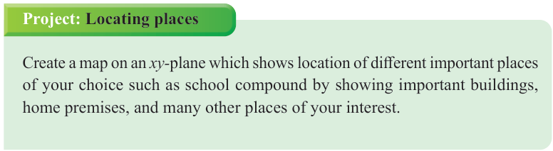

Project: Locating places
Create a map on an -plane which shows location of different important places of your choice such as school compound by showing important buildings, home premises, and many other places of your interest.

Create a map on an -plane which shows location of different important places of your choice such as school compound by showing important buildings, home premises, and many other places of your interest.